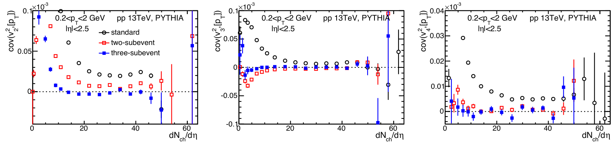
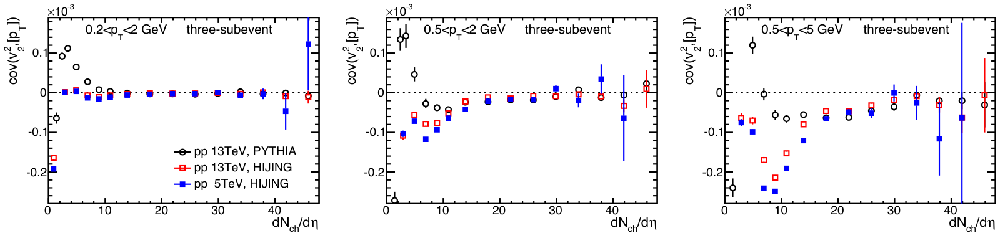
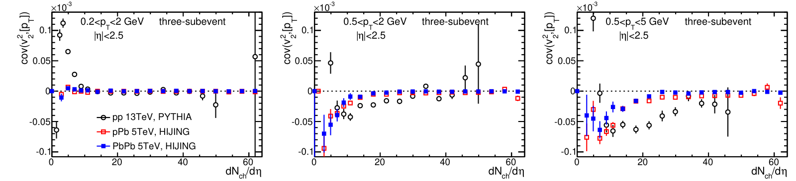
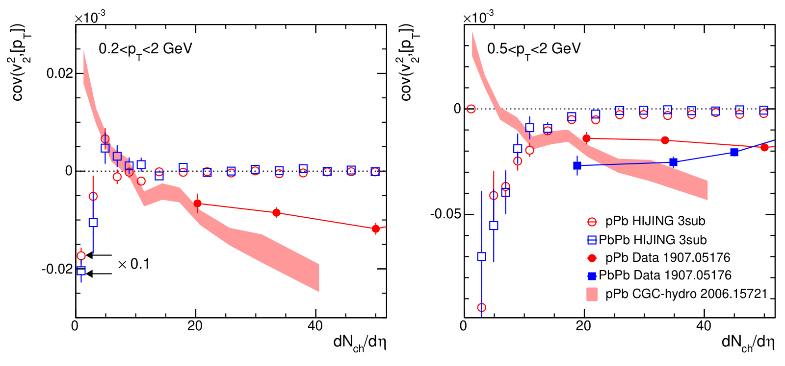
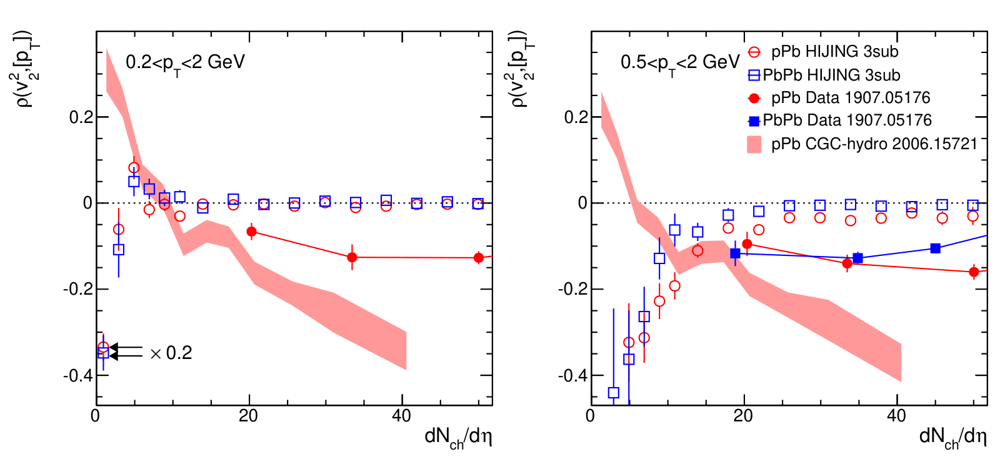

Rapidity-separated subevents suppress non-flow in flow–momentum correlations of small systems
Non-flow effects in correlation between harmonic flow and transverse momentum in nuclear collisions
C. Zhang, A. Behera, S. Bhatta, J. Jia, Phys. Lett. B 822, 136702 (2021)
My role: co-author.
In one paragraph
In small collisions, events with stronger elliptic flow v₂ have lower mean transverse momentum [pT]. Jets and decays, called non-flow, can also correlate these two. Using the Pythia and Hijing models, we show that splitting the detector into rapidity-separated subevents removes most non-flow. What remains is much smaller than the data, except at very low multiplicity, where it depends on the model.
1The gap: a proposed test of saturation, with non-flow unchecked
In each collision we can measure two numbers: how elliptic the particle emission is (v₂) and the average momentum per particle [pT]. In hydrodynamics, v₂ follows the shape of the initial collision zone and [pT] follows its size: a more compact zone pushes harder and gives a larger [pT].
ATLAS measured a large negative correlation in pPb and peripheral PbPb collisions, as hydrodynamics expects. Calculations with gluon saturation predicted that at very small multiplicity the initial momenta of the gluons would turn the correlation positive. Such a sign change was argued to be strong evidence for saturation.
2What we compute: non-flow in models with no flow at all
The observable is the covariance cov(v₂², [pT]): built from triplets of particles, two that measure v₂ and one that carries its pT. Non-flow means correlations among only a few particles, from jets, dijets and resonance decays, usually in one or two small regions of the detector.
Flow spans a wide range of pseudorapidity η (angle along the beam); non-flow is local. So we take the particles from separate η windows, using the same windows as ATLAS: standard (all of |η| < 2.5), two-subevent (a and c, with a gap |η| < 0.75) and three-subevent (v₂ from a and c, [pT] from a middle window b).
We generate pp collisions with Pythia8 and Hijing, and pPb and peripheral PbPb collisions with Hijing. These models contain jets and decays but no flow, so anything they give is non-flow. We also work out the formulas that compute all three methods quickly from per-event sums.
3What we observe: three subevents work best, but not perfectly
In Pythia pp collisions the standard method gives a large positive covariance for every harmonic, as expected from jets. Two subevents reduce it, and three subevents reduce it the most. This ordering holds for every system and pT range we studied.

Even with three subevents some non-flow remains, and at low multiplicity the models disagree. For pp, Pythia and Hijing agree above dNch/dη ≈ 20. Below that, Pythia turns positive at the lowest multiplicities, while Hijing mostly stays negative.


Compared with ATLAS data, leftover non-flow is much smaller in PbPb. In pPb at 0.5–2 GeV it reaches about 30–40% of the measured covariance at dNch/dη ≈ 20. Below dNch/dη ≈ 10, the positive saturation signal in a CGC-hydro calculation seems smaller than the negative Hijing non-flow.


4What we conclude: the data at higher multiplicity are genuine; the low end is unclear
Above dNch/dη ≈ 20, leftover non-flow is much smaller than the measured covariance in pPb and PbPb. This supports reading the data as a final-state, hydrodynamic response to the initial geometry.
At very low multiplicity, the sign and size of the leftover non-flow depend on the model. If it is negative, it can hide the predicted sign change. If it is positive, a measured positive value cannot be credited to saturation alone. So, for now, a sign change by itself is not clear evidence for saturation.
5What comes next
- Better models of all sources: the paper calls for detailed quantitative studies of non-flow, initial-state and final-state effects together at low multiplicity.
- Use the three-subevent method: it gave the smallest non-flow for every harmonic, system and pT range studied.
- Clean normalisation: when computing ρ, the size of v₂ fluctuations should come from non-flow-free flow measurements; otherwise non-flow biases ρ at low multiplicity.
All plots on this page are reproduced from that paper under CC BY 4.0. Animations are simplified illustrations made for this page, not results of the paper.